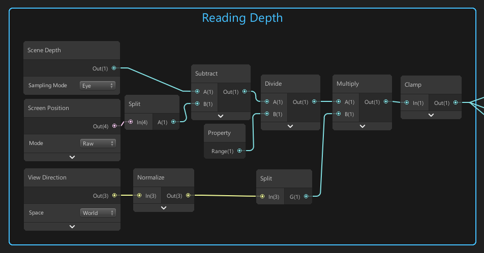
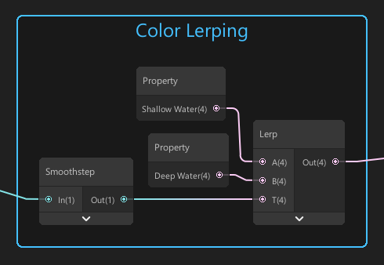

Water Part 1: Reading Depth
Back to projects
Part 2: Adding Foam
This article will explain how to read depth in Unity LWRP. I will be using the depth buffer to read depth and use those values to create a basic water shader.
Depth Textures
 A depth-texture view from the famous Sponza Palace scene.
First let's explain what a depth texture is. A depth texture is a texture that gets its value from the
camera's depth buffer. The texture displays the depth of the scene by using a color gradient between
black and white. Generally in Unity, closer objects get drawn in white and further away objects in
black but of course this is just a convention.
A depth-texture view from the famous Sponza Palace scene.
First let's explain what a depth texture is. A depth texture is a texture that gets its value from the
camera's depth buffer. The texture displays the depth of the scene by using a color gradient between
black and white. Generally in Unity, closer objects get drawn in white and further away objects in
black but of course this is just a convention.
Reading Depth in Unity
Unity allows you to access the camera's depth texture. In a LWRP project using shader graph, we will
use the scene depth node for this. This node has 3 sampling modes with 3 different outputs.
| Sampling Mode |
Description |
| Linear 01 |
Returns a linear depth value between 0 and 1.
Values depend on the camera's far-plane value since this plane determines the maximum visible distance.
|
| Raw |
Returns the raw depth value. |
| Eye |
Returns the depth value converted to view space. |
Basically the scene depth determines the depth in the scene of every object that the camera is seeing.
Now how do we read the scene depth in Unity?

This might look a bit overwhelming at first but let's go through it step by step!
1. We subtract the scene depth by the alpha component of the screen position. The alpha component
holds the depth value.
2. We divide by a 'Range' variable. This allows us to choose the 'maximum depth' of our water after
which our water will no longer become darker.
3. We multiply by the y-component of the normalized view direction. This will make it so that the
perceived depth is not dependent on the viewing direction
4. We clamp the output to [0,1]

Blending Colors
Now we can use the output of our depth nodes to blend between 2 colors. 1 color for deeper water, and
1 color for more shallow water. We simply take the clamped output of our depth nodes and use it as a
lerp factor between the 2 colors.

The clamped depth output is always a value between 0 and 1, so we can take this output as the lerp factor. We also add a smoothstep node to make the color transition even smoother. The output of our color lerping nodes go into the albedo slot of our material.
Part 2: Adding Foam
@alexanderameye
alexanderameye@gmail.com